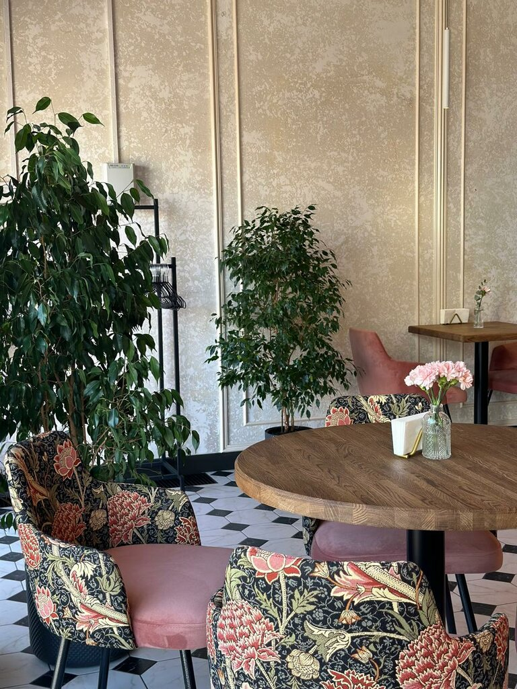
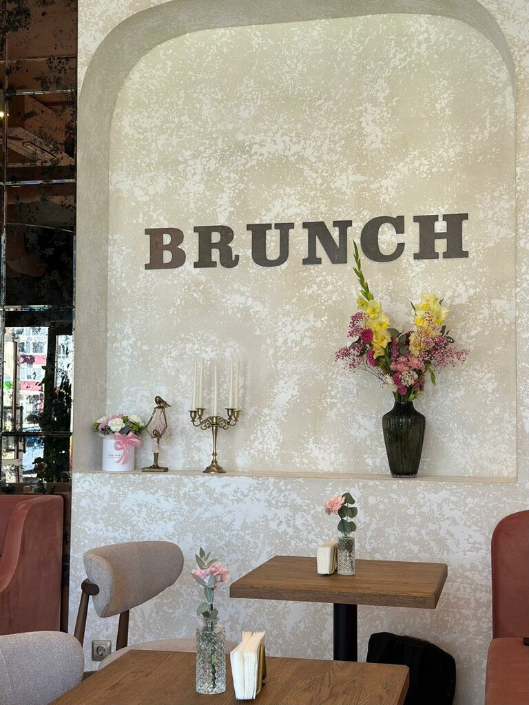
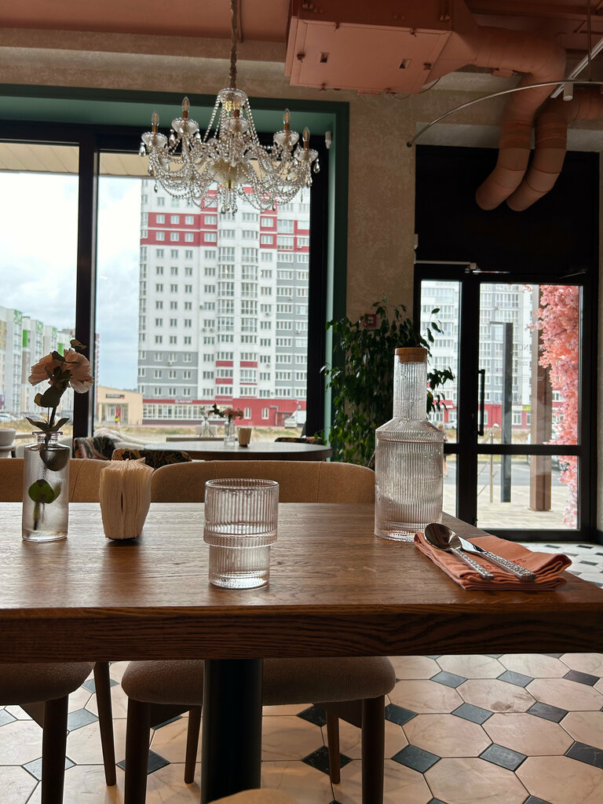

Авокадо, пашот, лосось и голландский соус.
750 ₽Завтраки весь день
Кафе на Войстроченко, 5 с пудровым залом, фарфором, кофе с собой и меню для длинных встреч.

4.6
на Yandex Maps
102
отзыва
09:00-22:00
ежедневно
2026
Хорошее место
Завтрак здесь не заканчивается утром
В Brunch приходят за сырниками, тостами, кофе, спокойной работой у окна и встречами, которые не хочется сокращать.
завтраки весь день
кофе с собой
можно с питомцем
Wi-Fi и ноутбук
летняя терраса
подарочные сертификаты



Цветочная арка, фарфор и пудровый зал
Интерьер держится на мягком розовом, темно-зеленых рамах, черно-белой плитке, деревянных столах и классических люстрах.
- розовая мягкая мебель
- цветы на столах
- открытая кухня
- детское меню
Для бранча, встречи, ноутбука и прогулки с собакой
Brunch подходит для длинного завтрака, кофе перед делами, десерта после прогулки и тихой работы у окна.
Завтрак весь день
Бранч с семьей
Кофе с собой
Работа с ноутбуком
Встреча с питомцем
Десерт и чай
Гости отмечают еду, атмосферу и интерьер
В карточке Brunch: 185 оценок, 102 отзыва и отметка "Хорошее место 2026".
"Кофе стабильно хороший, сотрудники дружелюбные."
Гость Yandex Maps
"Уютненький интерьер, классное меню, очень вкусно и адекватные цены."
Гость Yandex Maps
"Очень красивое место. Вкусно, в красивой посуде."
Гость Yandex Maps
Brunch на Войстроченко, 5
Кафе работает каждый день с 09:00 до 22:00. Можно позвонить, построить маршрут или зайти за кофе с собой.
Адрес
Брянск, улица имени А.Ф. Войстроченко, 5
Телефон
+7 (905) 177-01-20
Режим
ежедневно, 09:00-22:00